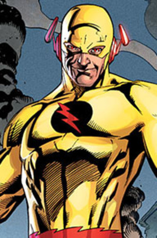
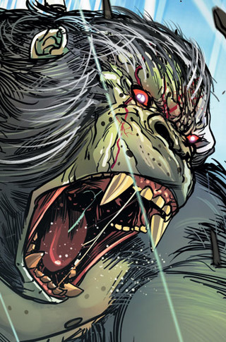
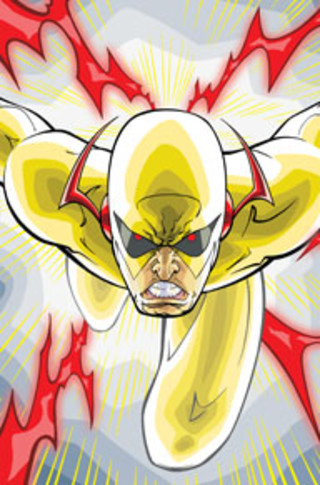

Young Barry Allen’s life stopped the minute his mother was murdered. The true killer never found, its mystery obsessed Barry, driving him to become a forensic scientist. Consumed by his work, he spent his life chained to his desk, solving every case that flew across it. But when a freak lightning bolt hits a nearby shelf in his lab, Barry receives super-speed, becoming the Flash. Now, he’ll race up buildings, across oceans, and around the world to get his man—while getting introduced to a world so much bigger than his old life of microscopes and cold cases.
Visit MeFor every action, there's an equal and opposite reaction. And with every step the Flash takes toward the future, someone from the future is racing backward through time to stop him—the villainous speedster known as the Reverse-Flash.
Through millions of years of adaptation and change, human beings evolved to become the dominant species on the planet Earth. But for the super-villain known as Grodd, the world shouldn't belong to the humans. It belongs to the apes.
Many heroes had tragedies happen at a young age or in the early days of their careers. But for those who haven't, one man makes it his duty to break them down in order to make them better, even if he has to force their tragedy himself: Zoom.
